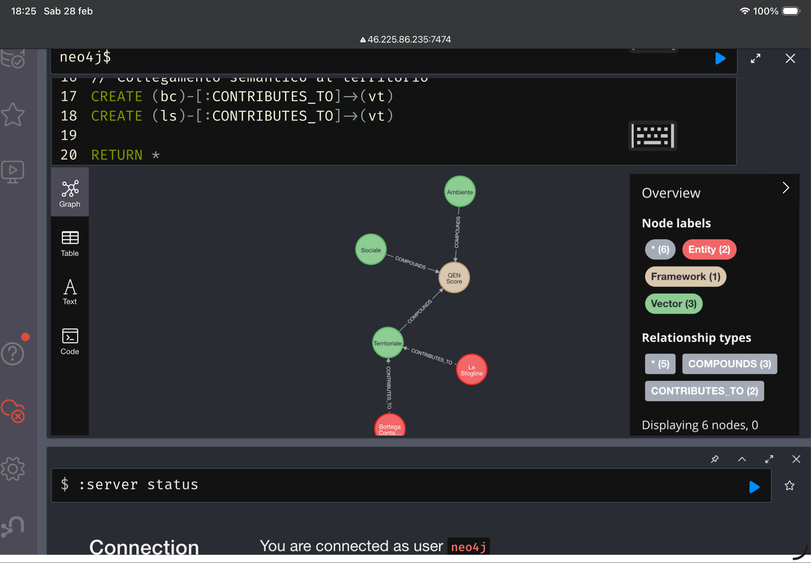

[ IDENTITY VERIFIED ] — ROBERTO BOB MALINI
COGNITIVE
LOGIC
"Beyond the graphical interface: data must be intelligible, transparent, and immediately operational for autonomous agents."
01 · QEN Score
QEN Score = (V_a × 0,35) + (V_s × 0,40) + (V_t × 0,25)
V_a: Ambientale (35%)
V_s: Sociale (40%)
V_t: Territoriale (25%)
Status: CSRD Compliant
02 · Laboratorio QEN
Visualizzazione semantica del Vettore Territoriale (V_t) - Caso Studio: Le Sfogline Bologna.

Dato validato il 01/03/2026 - Pure Data Node operativo.